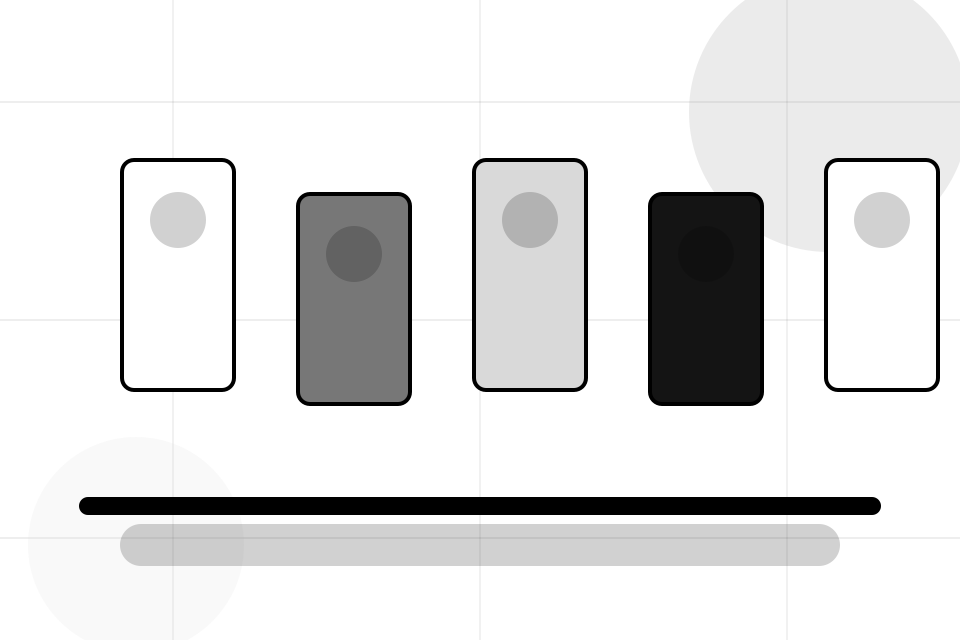

Categories / 01
Categories by Market
Categories shaped for e-commerce, marketplaces & digital commerce decisions.
Categories opens as a clear e-commerce decision hub: what Market offers, who it helps, why it matters, and which route to take first.
The first screen combines positioning, proof, primary action, and fast internal navigation, so people can act immediately or compare the rest of the categories route with context.
Browse quicklyCompare clearlyAsk availability
Fashion-commerce grid hero
Choose buyer or seller
Select the closest route and Market keeps the next step, proof, and follow-up expectation aligned with speed and transaction trust.

Categories / 02
Main inside categories
Main adds commerce context to the categories route, using the monochrome catalogue system structure to support speed and transaction trust before visitors choose a next step.
Market uses monochrome product cards and focused copy to make the decision easier to scan, aligning the section with speed and transaction trust rather than filling space.
Explore CategoriesContext
Main gives the page a specific angle instead of repeating the navigation label.
Judgment
The monochrome product cards show what to compare, what to avoid, and what matters most for e-commerce, marketplaces & digital commerce visitors.
Direction
The final cue points to a useful internal route so the section keeps the journey moving.
Categories / 03
Sub inside categories
Sub adds commerce context to the categories route, using the monochrome catalogue system structure to support speed and transaction trust before visitors choose a next step.
Market uses monochrome product cards and focused copy to make the decision easier to scan, aligning the section with speed and transaction trust rather than filling space.
Explore CategoriesContext
Sub gives the page a specific angle instead of repeating the navigation label.
Judgment
The monochrome product cards show what to compare, what to avoid, and what matters most for e-commerce, marketplaces & digital commerce visitors.
Direction
The final cue points to a useful internal route so the section keeps the journey moving.
Categories / 04
Collections inside categories
Collections adds commerce context to the categories route, using the monochrome catalogue system structure to support speed and transaction trust before visitors choose a next step.
Market uses monochrome product cards and focused copy to make the decision easier to scan, aligning the section with speed and transaction trust rather than filling space.
Explore CategoriesContext
Collections gives the page a specific angle instead of repeating the navigation label.
Judgment
The monochrome product cards show what to compare, what to avoid, and what matters most for e-commerce, marketplaces & digital commerce visitors.
Direction
The final cue points to a useful internal route so the section keeps the journey moving.
Categories / 05
Trending inside categories
Trending adds commerce context to the categories route, using the monochrome catalogue system structure to support speed and transaction trust before visitors choose a next step.
Market uses monochrome product cards and focused copy to make the decision easier to scan, aligning the section with speed and transaction trust rather than filling space.
Explore CategoriesMarket structures trending around context, judgment, and a clear next route so visitors can compare the block quickly before they browse the market.
Browse MarketCategories / 06
Seasonal inside categories
Seasonal adds commerce context to the categories route, using the monochrome catalogue system structure to support speed and transaction trust before visitors choose a next step.
Market uses monochrome product cards and focused copy to make the decision easier to scan, aligning the section with speed and transaction trust rather than filling space.
Explore CategoriesContext
Seasonal gives the page a specific angle instead of repeating the navigation label.
Judgment
The monochrome product cards show what to compare, what to avoid, and what matters most for e-commerce, marketplaces & digital commerce visitors.
Direction
The final cue points to a useful internal route so the section keeps the journey moving.
Categories / 07
Recommendations inside categories
Recommendations adds commerce context to the categories route, using the monochrome catalogue system structure to support speed and transaction trust before visitors choose a next step.
Market uses monochrome product cards and focused copy to make the decision easier to scan, aligning the section with speed and transaction trust rather than filling space.
Explore CategoriesContext
Recommendations gives the page a specific angle instead of repeating the navigation label.
Categories / 08
Filters inside categories
Filters adds commerce context to the categories route, using the monochrome catalogue system structure to support speed and transaction trust before visitors choose a next step.
Market uses monochrome product cards and focused copy to make the decision easier to scan, aligning the section with speed and transaction trust rather than filling space.
Explore CategoriesContext
Filters gives the page a specific angle instead of repeating the navigation label.
Judgment
The monochrome product cards show what to compare, what to avoid, and what matters most for e-commerce, marketplaces & digital commerce visitors.
Direction
The final cue points to a useful internal route so the section keeps the journey moving.
Categories / 09
Browse inside categories
Browse adds commerce context to the categories route, using the monochrome catalogue system structure to support speed and transaction trust before visitors choose a next step.
Market uses monochrome product cards and focused copy to make the decision easier to scan, aligning the section with speed and transaction trust rather than filling space.
Explore Categories- 01
Context
Browse gives the page a specific angle instead of repeating the navigation label.
- 02
Judgment
The monochrome product cards show what to compare, what to avoid, and what matters most for e-commerce, marketplaces & digital commerce visitors.
- 03
Direction
The final cue points to a useful internal route so the section keeps the journey moving.
Important notes before you act
Information is provided for planning and should be reviewed for the final client, location, and operating rules.